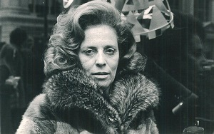

INTRODUÇÃO À MODA
História e Evolução
A história do design da moda está intrinsecamente ligada á evolução da sociedade, da cultura e da tecnologia. Desde os primórdios da moda, onde as roupas eram especialmente costuradas á mão, já se eram criadas as famosas tendências, com as quais temos suas atualizações á cada semana atualmente, por exemplo. O design de moda é resultado de diversas manipulações dos elementos que á compõem, dentre elas estão: a cor, o formato e a silhueta, a textura e os materiais utilizados.
Importância Social e Cultural
Assim como pode ser considerada uma expressão de estilo pessoal, a Moda, diferentemente do que muitos pensaam, pode trazer aspectos culturais. Isto ocorre porque ela mescla a estética e a inovação de uma peça, transformando-a em história. Desta forma, se destacada da maneira correta pode representar toda uma situação social. E aí? Vamos conferir algumas vezes que em que a Moda não foi somente uma expressão, mas também um ato político?
Zuzu Angel - Estilista Mineira (1971)
A estilista brasileira que se opôs ao regime ditatorial brasileiro, Zuleika Angel Jones, também conhecida como Zuzu Angel, será o nosso primeiro tópico de discussão. Nascida na cidade de Curvelo, em Minas gerais, a mineira ganhou fama após, através da Moda, confrontar o Governo durante o duro regime da época. Em suma, os seus desfiles se basearam muito na cultura baiana, pricipalmemte nas cores fortes e alegres que trazia aos seus desfiles nas passarelas americanas. A caracterização de suas roupas, além das cores, trazia muito da cultura brasileira como, por exemplo, a forma e silhueta e os materiais utilizados na construção de suas coleções.
Balenciaga e a guerra na Ucrânia
Como segundo tópico, por que não abordarmos uma das marcas mais polêmicas da atualidade? E como sempre, Balenciaga ataca de novo, mas desta vez, no alvo certo. Todos já ouviram falar dos desfiles insanos desta marca, independentemente de gostarmos ou não, sabemos que ela está aqui para causar. Mas o que ela tem com relação a guerra que está sendo muito pautada na Ucrânia?
PatBo e a feminilidade brasileira nas passarelas
Quem gosta de Moda e é brasileiro certamente já ouviu falar da PatBo - marca criada pela brasileira Patricia Bonaldi.